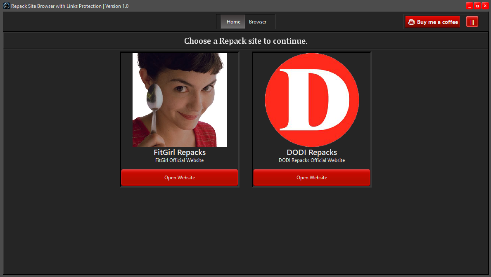
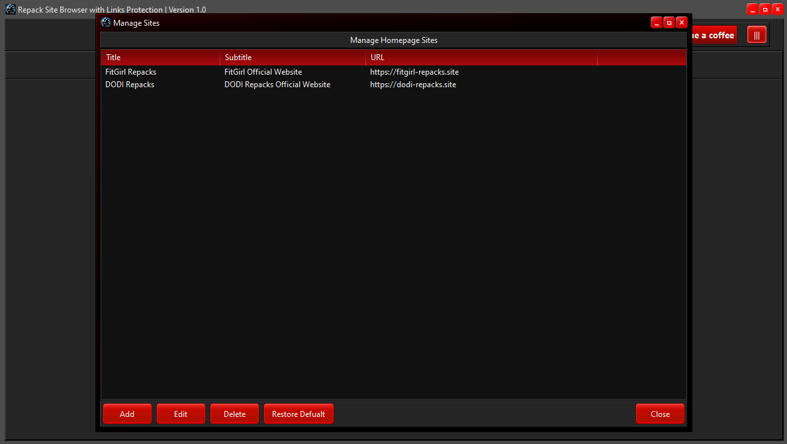
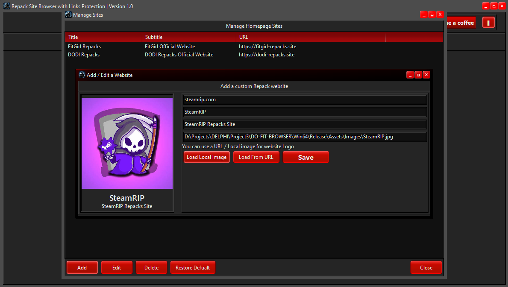
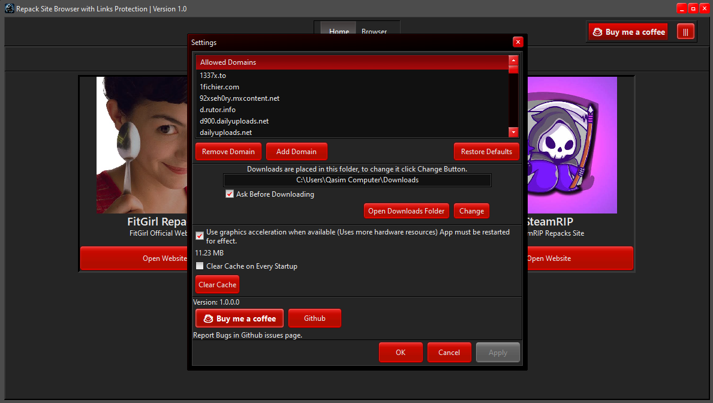
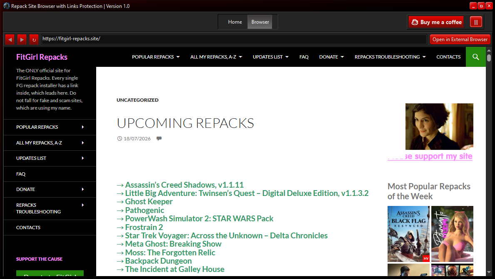
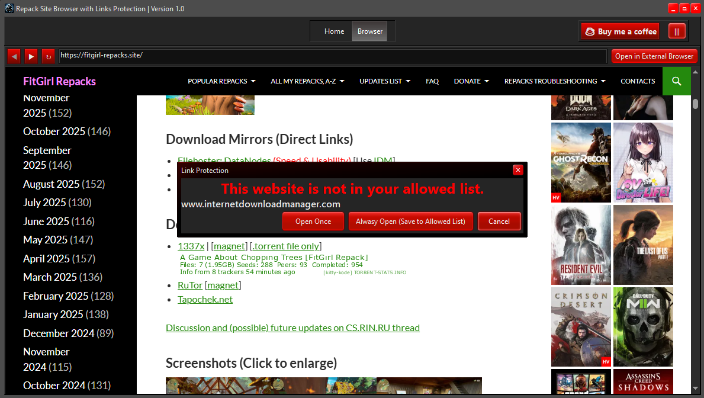
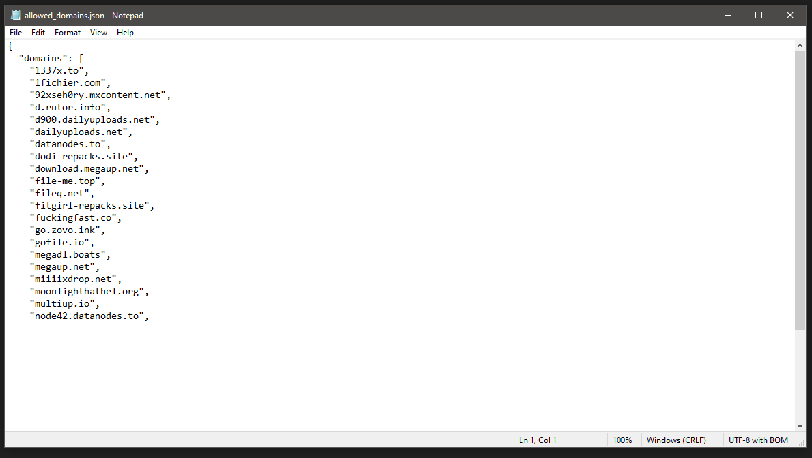

Repack Site Browser screenshots.

Main interface of Repack Site Browser.

Customizable homepage of Repack Site Browser. Add and remove your favorite websites.

Add your favorite Repack sites with the built-in website manager.

Settings and Allowed domains system. You can Add and remove domains as needed.

Browser in action.

Link protection feature of Repack Site Browser.

You can edit the allowed_domains.json file to manage allowed domains.
(Data/allowed_domains.json)